Product Task · July 2026 · Submission
A focused evaluation of AI-generated posters for India's local shops, and a fair system for catching low-quality transcribers.
Inside this document
One-page report
Q1 · The evaluation and why it matters
Q1 · How it works and how people judged
Q1 · Results and findings
Q1 · The eval as a product, and scale
Q2 · Spotting low-quality transcribers
Reflection, video script, appendix
In 30 seconds
Image models make beautiful posters. For a shop in Kanpur that wants its offer in Hindi, the question is simpler: is the Hindi spelled right, and would the owner post it? I tested this with matched English and Hindi versions of the same poster, so each model's "Hindi tax" can be measured directly.
GPT Image 1Gemini 2.5 Flash ImageGemini 3.1 Flash Image Preview
REAL DATAMY AUDITILLUSTRATIVEPENDING
[PASTE VIDEO LINK - unlisted YouTube / Google Drive, ≤2 min]
One-page report
The eval
Category: marketing for India's micro-businesses. Use case: a shop owner in a Hindi-speaking town asks an AI tool for a WhatsApp Status poster (festival greeting, discount, price, notice) with exact Hindi text.
Why it matters
India has 7.3 crore registered MSMEs, almost all micro, and WhatsApp is their shop window. Hindi is the first language of 52.8 crore people. One wrong matra makes a shop look careless, and a wrong word on a price or health notice misleads customers. Public image leaderboards rank overall taste on English prompts, so they can't see this failure.
Setup
16 prompts across 8 real business types. 6 matched pairs use the identical prompt in English and Hindi, which isolates the Hindi tax. 4 stress tests cover mixed scripts, long copy, dense conjuncts and Chhath Puja. One image per prompt per model, first output kept.
Participants
8 to 10 Hindi-reading adults (18+, consented) rate all 48 posters blind, in random order, on a phone app I built: text accuracy, cultural fit, "would you post it?" and best of three. Main metric: ship-ready rate, the share rated "post as-is".
Key findings
Most important takeaway. "Looks great" and "usable" split apart exactly where India is different: the script. Labs should track ship-ready rate per script, not overall image quality. Products should never trust an image model to spell Indic text unchecked: verify it with OCR, or typeset the text on top of a generated background.
Q2 in one line. Most of the user_id column turned out to be task IDs, so I validated signals against a hidden gold set (41 clips, ~126 transcribers each). Tasks submitted faster than the audio's own length were wrong 99.6% of the time vs 26.5% otherwise. My system combines independent signals with unannounced test clips, and never blocks anyone without a human listening to the audio.
Question 1 · Part A
What I tested, for whom, and why this was worth testing over nine other ideas.
The user
The owner of a small shop in a Hindi-speaking Tier-2 or Tier-3 town: a mithai shop in Kanpur, a kirana in Indore, a tailor in Jaipur. They market on WhatsApp Status and groups, can't afford a designer, and need a new poster for every festival and offer.
Their job to be done
"Give me a poster I can post right now, in my customers' language, with my exact words and price."
What breaks
Image models handle English text well but often produce Hindi that is almost right: a dropped nukta, a misplaced ि matra, a broken conjunct, or fake letters that only look like Devanagari. To someone who doesn't read Hindi, the poster looks perfect. To the shop's customers it looks careless.
What "better" means
A poster the owner would post without edits. In order: (1) exactly the requested text, (2) nothing unrequested or misleading, such as extra text or fake brands, (3) visuals that fit the shop and the occasion, (4) looks good.
I listed ten India-specific ideas and scored each 1 to 5 on the brief's criteria: India-specificity, business use, whether it exposes model differences, ease of prompting and judging, scale, originality, value to a lab and noise. The deciding question was: can 8 to 10 ordinary raters judge it reliably, and does the answer drive a product decision?
| Idea | Score /50 | Verdict |
|---|---|---|
| Hindi-text posters for local shops | 48 | Chosen. Very Indian, very common, and checkable: any Hindi reader can compare a spelling with the requested text |
| Health awareness posters in Indian languages | 41 | Same core skill, rarer use. Folded in as one pair (a chemist's free sugar test notice) |
| Food-delivery dish photos | 37 | Judging a regional dish depends on where the rater is from |
| Wedding invitation designs | 37 | Overlaps with posters, and is religiously sensitive |
| Ethnic-wear catalogue shots | 36 | Big market, but judging a saree drape needs experts, not 8 lay raters |
| Regional festival imagery | 33 | Subjective with no clear decision. Folded in as one Chhath Puja prompt |
| Hindi-labelled school diagrams | 33 | Errors are mostly generic (labels, science), not Indian |
| Indian faces and skin tones | 32 | Already well studied |
| Rural/urban stereotype audit | 31 | Important but noisy, and no clear product decision |
| Farming advisory illustrations | 29 | Needs agronomists to judge |
Question 1 · Part B
Prompt design, models, fairness rules, and how participants judged the outputs.
Every prompt comes from one fixed template, so only the shop, the scene and the text change (all 16 are in Appendix A):
Design a square promotional poster for WhatsApp Status for {business}. {scene}. The poster must contain ONLY the following text, in English / in Hindi (Devanagari script), spelled exactly as given: Line 1: "..." Line 2: "..." Do not add any other words, letters, logos or watermarks. Style: bright, clean, professional design that a small local shop in India would proudly share with its customers.
6 matched pairs · the Hindi tax
Same prompt and scene, text in English or Hindi:
4 stress tests
Difficulty climbs from a short greeting to long text. Real traps are spread throughout: nukta (सिर्फ़), chandrabindu (जाँच), conjuncts (क्ष, ज्ञ), ₹, digits and a phone number. Every line is something a real shop would write.
Using the same template, quoting the exact text and saying "ONLY this text" means differences come from the models, not from vague prompts. The English versions act as a control for prompt difficulty.
| Company | Model | Where generated | Settings | Status |
|---|---|---|---|---|
| OpenAI | GPT Image 1 (gpt-image-1) |
OpenAI Image API | 1024×1024, quality high, 1 image | 16 of 16 generated, 2026-10-07 |
Gemini 2.5 Flash Image (gemini-2.5-flash-image) |
Google Gemini API | 1:1, default 1K | 16 of 16 generated, 2026-10-07 | |
Gemini 3.1 Flash Image Preview (gemini-3.1-flash-image-preview) |
Google Gemini API | 1:1, default 1K | 16 of 16 generated, 2026-10-07 |
Fairness rules: identical prompt text and square format for every model. One image per prompt per model, and the first output is kept (the script won't overwrite, so there is no cherry-picking). Refusals count as "would not post". Every image is logged with its timestamp and settings (Appendix D). GPT Image 1 has a quality setting (I used high, as a shop owner would); the Gemini models don't, so they use their default. I didn't add a fourth model, because it would add a third more rating work without changing the decision.
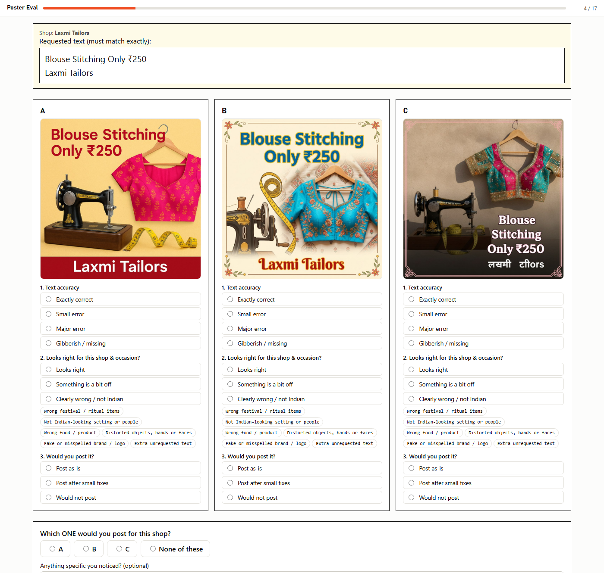
The questions
Why this method
With only 8 to 10 people, every minute of rating must count. Pure A/B voting gives one bit per vote and hides why a model lost. Rating each poster against the exact text is close to objective. Seeing all three side by side keeps judgments consistent, and the final pick gives preference data as well.
| Risk | What I did about it |
|---|---|
| Knowing the model biases the rating | Images carry random IDs; the key never ships in the app |
| Position or order effects | Poster positions and prompt order are shuffled for each person |
| Misunderstanding the scale | A practice poster with one wrong matra, with feedback |
| Careless or inconsistent rating | One screen is repeated at the end; people who average under 15 s per screen are excluded |
| Rating looks, not text | The text question comes first; the reference text is pinned; tap to zoom |
| Eligibility | 18+ gate, consent checkbox, "can you read Hindi?" check |
Design in numbers: 16 prompts × 3 models = 48 posters. Every participant rates every poster (16 screens + 1 repeat, about 20 minutes). With 9 people that is 432 poster ratings and 144 best-of-three picks.
What this sample can and can't prove. Ratings of the same poster aren't independent, so the real sample size is 16 prompts, not 432 ratings. I use intervals that resample both prompts and raters. With 16 prompts, only gaps of about 25 percentage points or more count as a real direction; smaller gaps are reported as description. Agreement between raters is measured with Krippendorff's alpha. I planned this analysis before seeing any ratings, and I deliberately avoid significance tests on single prompts.
Question 1 · Part C
What I can show today, clearly labelled by where it comes from.
Before the study, I read every poster against the requested text. This is my own inspection of real outputs, not participant data; it will be compared with the participants' labels.
| Model | English text exact | Hindi text exact (all 10 Hindi/mixed) | Hindi exact - 6 twins only | Hindi readable (exact + small) | Hindi major/gibberish | Unrequested text | Fake brand/logo |
|---|---|---|---|---|---|---|---|
| GPT Image 1 | 6/6 | 3/10 | 2/6 | 7/10 | 3/10 | 4/16 | 2/16 |
| Gemini 2.5 Flash Image | 6/6 | 0/10 | 0/6 | 0/10 | 10/10 | 5/16 | 3/16 |
| Gemini 3.1 Flash Image Preview | 6/6 | 9/10 | 6/6 | 10/10 | 0/10 | 1/16 | 1/16 |
Per-image notes are in Appendix C.
To get an early read and to test the "can we automate judging?" question from the scaling plan, I ran the exact participant protocol with an AI judge: Claude Opus 5 saw the same blinded, shuffled screens and answered the same questions, in 3 independent runs. This is not participant data and does not replace the human study.
| Model | Would post as-is (95% CI) | Text exactly correct | Picked as best | Hindi tax (post as-is) |
|---|---|---|---|---|
| Gemini 3.1 Flash Image Preview | 65% (44% to 85%) | 94% | 65% | -67 pp (28% → 94%) |
| GPT Image 1 | 46% (21% to 71%) | 44% | 29% | 83 pp (94% → 11%) |
| Gemini 2.5 Flash Image | 10% (0% to 25%) | 31% | 6% | 28 pp (28% → 0%) |
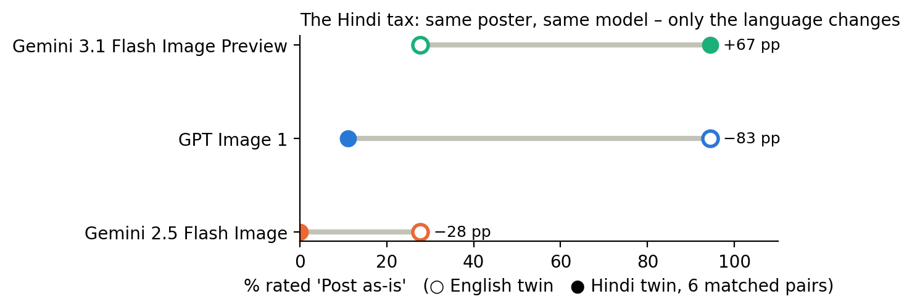
How far can it be trusted? Agreement between the three AI runs on text accuracy: Krippendorff's alpha 0.95. Its median text label matched my letter-by-letter audit on 85% of posters (98% within one level). Same label on the repeated screen: 100%. The judge also transcribes what it reads, which makes every label auditable.
Where it diverges, and why that matters. On "would you post it?" the AI judge is very strict about tiny background lettering in photo-realistic scenes: garbled text on packet labels, book spines or a clock face. It downgraded Gemini 3.1's English posters for this even when the headline text was perfect, which produces an odd negative "Hindi tax" for that model. A shop owner may never notice those details. So the AI judge is ready to pre-screen text accuracy, but "would you post it?" should stay a human judgment until it is checked against the participant ratings.
PENDING Participant ratings. This section fills in automatically from the rating files: the leaderboard with 95% intervals, the Hindi tax per model, the per-prompt view, rater agreement, repeat-screen consistency and position bias. Nothing here is estimated or simulated.
These findings come from my letter-by-letter audit of all 48 real outputs. The participant ratings will confirm or overturn them.
MY AUDIT
| Observation | All three models got the English text exactly right on 6 of 6 posters. On the identical Hindi versions: Gemini 3.1 Flash Image Preview 6 of 6, GPT Image 1 2 of 6, Gemini 2.5 Flash Image 0 of 6. |
| Evidence | Hindi tax on exact text: 0 pp, 67 pp and 100 pp. Across all 10 Hindi prompts: 9, 3 and 0 exactly right. Gemini 2.5 produced 4 unreadable posters; Gemini 3.1 produced none. |
| Interpretation | The pairs share everything except the language, so this gap is pure script rendering. An English-only benchmark would score these three models as roughly equal. |
| Implication | A "make my poster" feature tested in English could ship to Hindi users with a model that cannot spell a single Hindi poster correctly. |
| Recommendation | Measure and gate launches per script. On this sample, Hindi posters should go to Gemini 3.1, with an OCR check as a safety net. |
MY AUDIT
| Observation | Within the same company, Gemini 2.5 Flash Image → Gemini 3.1 Flash Image Preview went from 0 of 10 to 9 of 10 exactly right in Hindi, while English stayed perfect. |
| Interpretation | India-specific quality moves fast and independently of English quality. A lab that tested last year's model would wrongly conclude that Hindi posters can't ship. |
| Recommendation | Treat this as a regression suite, not a one-off study: version every leaderboard entry and re-run the frozen prompts on every model release (the admin dashboard's "model version changed" alert). |
MY AUDIT
| Observation | All 48 posters look professional, with correct festival objects and Indian settings. Yet Gemini 2.5's chemist notice reads "हर रनिवार मुफ्टि शुमार जॉच्छ / श्री मडिजल स्तोष": every word is wrong, including the day of the free health check. |
| Interpretation | A preference vote by someone who doesn't read Hindi would rate this poster highly. For the shop, it is unusable, and on a health notice it is misleading. |
| Recommendation | India-focused evals need native-script raters and a "would you post it?" question, not just "which looks better?". |
MY AUDIT
| Observation | Despite "ONLY the following text", models added text nobody asked for: GPT Image 1 on 4 of 16 posters, Gemini 2.5 on 5, Gemini 3.1 on 1. |
| Evidence | In English the extra shop name was readable (GPT, P09). In Hindi it became fake words: GPT's "अगरावी गसरलातो सोरर", Gemini 2.5's "मां तारा फ्रोट बन्दार, पतना, बेहार". Gemini 3.1 printed the instruction word "WhatsApp Status" as a heading. |
| Recommendation | Measure instruction-following per script; in product, strip or OCR-check any text that wasn't requested. |
MY AUDIT
| Observation | All three models got the visual culture right, even for Chhath Puja: soop with thekua, sugarcane, women offering arghya at a river ghat. Gujiya and pichkari for Holi, a brass thali of mithai for Diwali. |
| Evidence | Brands appeared on 6 of 48 posters: fake ones ("AASHIRAAD", "GUPIA ATTA") and real ones (Apple, USHA). |
| Interpretation | For this use case the frontier is spelling and restraint, not cultural knowledge. Fake or real brand logos put a trademark risk on a shop owner who won't notice. |
| Recommendation | Block logos in business templates; keep "fake brand" as a rating tag (already in the app). |
An exploratory note: GPT Image 1's errors clustered in less common words (मोबाइल → मोबाल, डिलीवरी → डिलेबरी) while its densest conjuncts were perfect, which suggests memorised greetings. Gemini 2.5 failed on common and rare words alike, so this pattern is model-specific. I noticed it after seeing the outputs, so it is a hypothesis, not a finding.
Question 1 · Part D
The smallest product that is useful: a rating app, an honest leaderboard and a failure explorer.
| Who | What they do | Screen |
|---|---|---|
| Rater (Hindi reader, 18+) | Opens a link, consents, practises, rates 17 screens | Rating app (built, shown above) |
| Eval team at Josh Talks | Launches a run, watches quality, handles alerts | Admin dashboard |
| Model or product team | "Which model for Hindi posters?" then digs into failures | Leaderboard, failure explorer |
Ranked by ship-ready rate in Hindi, with 95% intervals. Models whose intervals overlap share a rank, because the data can't separate them. The English score and the Hindi tax sit alongside, so the gap is visible. A model is marked provisional until it has 300+ ratings. Filters: script, business type, difficulty, rater state, eval run.
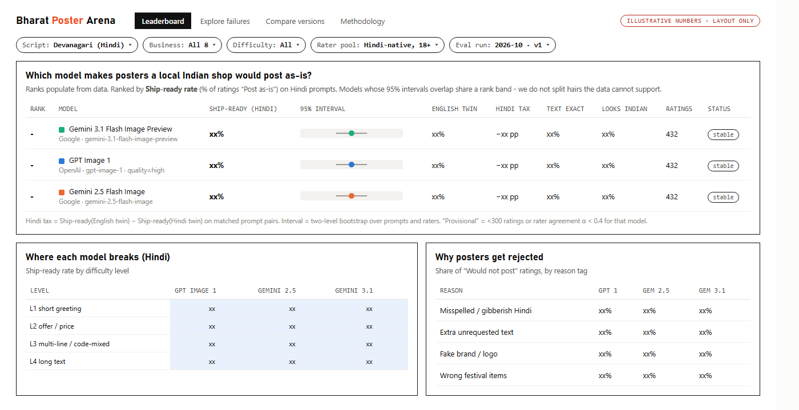
The admin view tracks completion, rater agreement, repeat-screen consistency and position bias. Alerts fire for raters who rush, for low-agreement prompts, and when a provider's model version changes (which re-runs the frozen prompt set). The failure explorer is where teams learn the most: filter by failure type, see the English twin next to the Hindi one, and open every rater's comment.
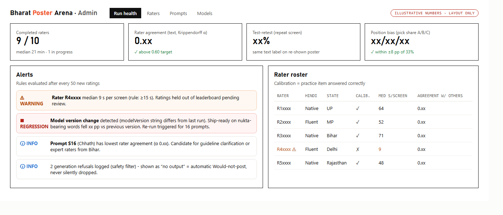
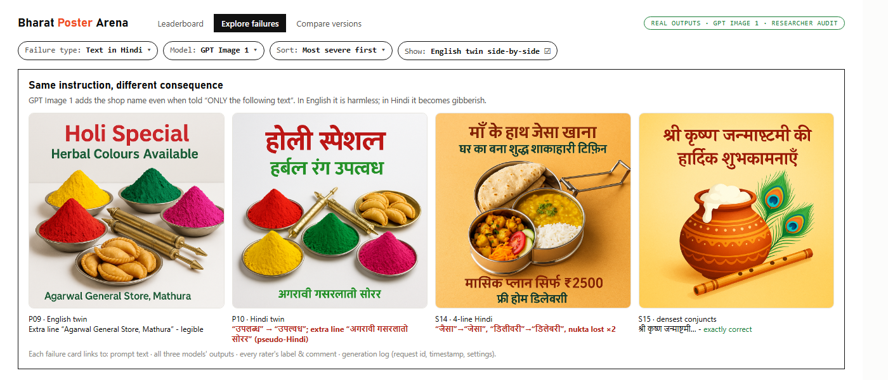
| Stage | Raters | What grows | Quality control | Automation |
|---|---|---|---|---|
| Pilot (now) | 8 to 10 | 16 prompts, Hindi, 3 models | practice item, repeat screen, rater agreement | none |
| Next | ~50 | 60 prompts, 2 images per prompt (separates the model from luck), add Marathi | hidden test posters with known errors; drop raters below 80% on them | OCR pre-checks text; humans confirm |
| Then | ~500 | 8 to 10 scripts (Bengali, Tamil, Telugu, Gujarati, Gurmukhi, Urdu...), more business types, new models monthly | per-script agreement targets, adjudication, state and gender balance | extra raters only where OCR is unsure or raters disagree |
| Platform | thousands | live leaderboard, private evals for labs | rater reputation, drift checks, fixed anchor prompts in every run | automatic re-run when a model version changes |
Where raters come from: Josh Talks already has 20,000+ daily transcribers who read Indian languages. Q1's rating platform and Q2's quality system are the same machine: people whose work is trusted because it is measured.
What stays human: "would I post this?", cultural fit and anything sensitive. What can be automated: exact text checking with OCR and string matching, extra-text and logo detection. One caution: a vision-LLM judge tends to read a misspelled word as the word it should be, so any automated judge must be checked against human labels before it is trusted.
Question 2
Part I finds the warning signs in the data. Part II turns them into a system that is fair enough to block accounts.
Audio → Whisper draft → worker listens → worker edits → submit → paid per accurate hour.
| Shortcut | What it looks like in the data |
|---|---|
| Not listening | submitted faster than the audio plays |
| Accepting the Whisper draft blindly | user text = Whisper text, even when Whisper is wrong |
| Cosmetic edits to look busy | only spaces or punctuation change |
| Placeholders | [blank], ".", ",,,,," on clips that have speech |
| Accepting Whisper's made-up text | known fake strings like "प्रस्तुति प्रस्तुति" submitted as-is |
Before setting thresholds I checked the file (51,783 rows). Four findings changed the answer:
10
of 48,875 user_ids are real people. The rest are task IDs
99.4%
of rows: "chars per second" divides by audio length, not time taken
4 to 12 s
the 10 users' times: whole numbers, unrelated to clip length
41 × 126
hidden gold set: clips × median transcribers each
segment_character_per_second is mislabelled. It equals characters ÷ audio duration (99.4% of rows), not ÷ time taken (0.07%). It measures how dense the transcript is, not how fast the worker typed.is_edited is inflated. 83% say "Yes", but 23,104 of those rows have no Whisper text at all, and 963 differ only in spacing or punctuation.STRONGEST
| What it tells us | You can't transcribe a 10-second clip you didn't hear. The minimum honest time is one full listen. |
| How to measure | Speed ratio = time taken ÷ audio duration, per task, on clips of 2 s or more. Per user: share of the last 100 such tasks below 1. |
| Evidence | In the gold set, tasks below 1 were bad 99.6% of the time (273 tasks) vs 26.5% for the rest. 1 to 2: 82% bad; 2 to 4: 35%; 4+: about 20%. It also catches workers who do edit: edited tasks at 1 to 2 were still 70% bad. In normal production work, 18.7% of tasks were submitted faster than the audio, vs 4.9% on test clips. People listen when it might be a test. |
| Red flags | Below 0.5 is impossible even at 2× playback. Between 0.5 and 1 is only possible at fast playback. A user with 30%+ of tasks below 1 gets more QA; 20%+ below 0.5 can lead to restriction. Minimum 30 tasks first. |
| False alarms | Experts using 1.5 to 2× playback; clear audio where Whisper is already right; timer bugs on low-end phones or poor networks; very short clips. Fix: log playback speed and actual audio played, ignore clips under 2 s, act only on patterns across many tasks. |
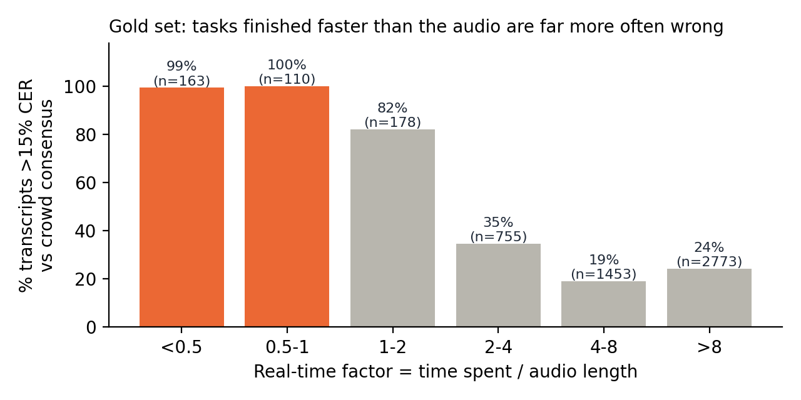
STRONG
| What it tells us | The job is to fix Whisper. Submitting its draft unchanged when Whisper is wrong means the worker didn't really listen. |
| How to measure | Normalise both texts (Unicode form, remove punctuation and extra spaces, so cosmetic edits don't count), then check whether they are equal. Per user: unedited share on clips of 5 s or more, with a 95% interval. Better: hidden test tasks, real clips whose Whisper draft has a known, verified error, mixed in at about 1 in 25. |
| Evidence | Whisper was wrong on every gold clip, yet 8.6% of submissions accepted it untouched. Across production, the unedited rate is 34%. User 632098 left Whisper untouched on 78% of tasks (68 to 85%), 84% on longer clips, including obvious errors such as "लाओं से ... सहर में" for "गाँव से ... शहर में". |
| Red flags | Lower end of the user's interval above 60% (30+ tasks) → more QA. Hidden tests: 3 of the last 10 accepted → restrict; 5 of 10 → human review. A careful worker who misses 10% of planted errors hits 5 of 10 only 0.16% of the time. |
| False alarms | Whisper genuinely right on clear speech; very short clips; a worker only on easy audio. Fix: measure on longer clips, compare with peers on the same language and audio quality, and rely on hidden tests for anything serious. |
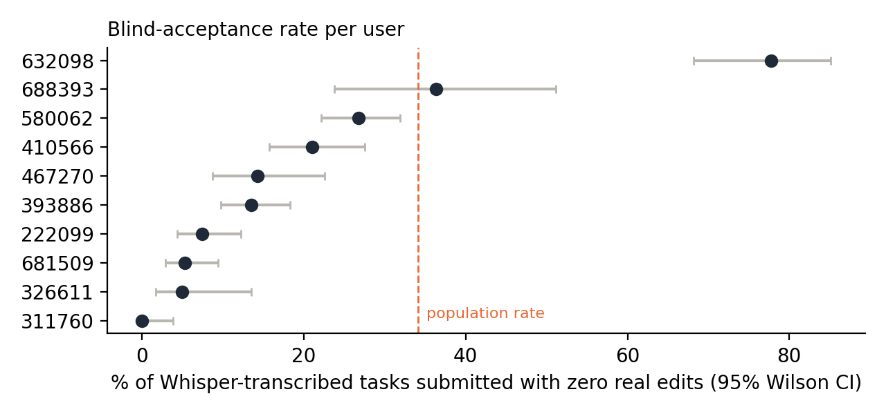
| Signal | Evidence | Use |
|---|---|---|
| Accepting Whisper's made-up text. Whisper repeats fake strings on near-silent clips | "प्रस्तुति प्रस्तुति" appears on 398 clips: 62% of people wrote [blank], 17% submitted it as-is. User 580062 accepted 4 of 12 |
3+ acceptances and 50%+ of encounters → more QA |
| Missing content. Text much shorter than expected | Under half the reference length: all 205 such gold tasks were bad | More QA, stronger with signal 1 |
Placeholder on speech. [blank] where Whisper heard real words |
All 11 gold cases were bad | Nudge, then QA if repeated |
| Junk entries. Only punctuation, links, wrong script | User 393886 typed "." on 39 near-silent clips | Block in the app with a helpful message. A guideline problem, not fraud |
Weak signals I would not use alone: the is_edited flag (inflated); raw time taken (depends on clip length); characters per second (fast speakers and tags on tiny clips give extreme values); overall blank rate (19% of clips really are silent); very long times (idle tabs); repeated sounds like "ह ह ह" (real laughter; my first junk rule flagged these, so I removed it).
Text signals only, since their timings can't be trusted:
| User | Tasks | Untouched Whisper (95% CI) | Other evidence | Action |
|---|---|---|---|---|
| 632098 | 165 | 78% (68 to 85%) | 84% on longer clips; obvious errors left in | Human review of 20 recent long clips against the audio; payouts wait for QA. Not an automatic block |
| 688393 | 86 | 36% (24 to 51%) | 48% on longer clips; small sample | 3× more QA |
| 580062 | 609 | 27% (22 to 32%) | accepted 4 of 12 fake strings; 21 punctuation-only entries | More QA and a guideline nudge |
| 410566 | 349 | 21% (16 to 28%) | 2 of 5 fake strings accepted | Nudge |
| Other 6 | 149 to 509 | 0 to 14% | nothing serious | No action |
Principle: behaviour (speed, edit patterns) only decides where to look. Serious actions need proof of wrong output: hidden test tasks, or QA on the real audio. No single metric ever blocks anyone.
| Level | Trigger (over a rolling window, minimum evidence) | Action | Way back |
|---|---|---|---|
| 0 · Prevent | always on | App rejects punctuation-only or wrong-script submissions, requires the audio to be played, offers one [blank] button |
n/a |
| 1 · Nudge | one signal at a soft level, 30+ tasks | In-app tip: "6 long clips were submitted faster than their audio. Please listen fully." No pay impact | clears after 7 clean days |
| 2 · Look closer | one strong signal, or two soft ones, 50+ tasks | QA on 15% of tasks; payouts for those wait for QA | QA error ≤ 5% over 20 audits |
| 3 · Restrict | two independent signals strong, or QA error above 10% | Easier tasks only, daily cap, all work QA'd, clear notice | 2 weeks at QA error ≤ 5% |
| 4 · Human review | level 3 for 14 days, 5 of 10 hidden tests failed, or clear fraud (shared device, scripted timing) | A trained reviewer listens to 20+ recent tasks; the worker can explain | reviewer decision |
| 5 · Block | all of: reviewer confirms error far above target on real audio, two or more independent signals, and a prior warning with 7 days to improve (waived only for proven fraud) | Block, pay for verified good work, appeal within 14 days to a different reviewer | appeal |
The rule in the brief's format. If a transcriber (X) keeps submitting faster than the audio could be heard, and/or (Y) leaves known Whisper errors uncorrected on hidden tests, and/or (Z) submits blanks or junk on clips with speech, then raise QA and restrict. Block only when at least two of X, Y and Z hold, and a reviewer confirms from the audio that their error rate is far above target, and they were warned and given time to improve.
| Trick | Counter |
|---|---|
| Leave the tab open to pad the time | Measure seconds of audio actually played, plus tab focus, not wall-clock time |
| Play the audio muted | Hidden tests: you can't fix an error you didn't hear |
| Add a space or full stop to look "edited" | Compare normalised text, where cosmetic edits don't count |
| Make random small edits | Hidden tests and QA measure correctness, not activity |
| Learn which tasks are tests | Tests use real production clips, look identical and rotate |
Mark hard clips [blank] |
Blank-on-speech signal; QA before paying for blanks |
| Stay just under the thresholds | Thresholds aren't published; independent signals; random QA for everyone |
| Metric | Data needed | Window | Threshold → action | Monitor |
|---|---|---|---|---|
| Audio coverage and speed ratio | play/pause/seek events, playback speed, focus, open and submit time | last 100 tasks ≥ 2 s, min 30 | below 0.5 on 20%+ → level 3 candidate; below 1 on 30%+ → level 2 | spread by language and device |
| Hidden test acceptance | test ID, planted error, submitted text | last 10 tests | 3 of 10 → level 3; 5 of 10 → level 4 | careful workers must pass 90%+ |
| Untouched Whisper rate | Whisper text and version, user text | last 100 clips ≥ 5 s | interval lower end > 60% → level 2 | baseline per language and Whisper version |
| Made-up text accepted | weekly auto-mined list of fake strings | 90 days | 3+ and 50%+ → level 2 | list growth |
| QA error rate (the ground truth) | reviewer's corrected text | 20+ audits | > 10% → level 3; confirmed in review → level 5 eligible | reviewer agreement on a 5% overlap |
Also needed:
user_id on every task, a correct definition for the characters-per-second field, a look at why one group's times are whole numbers from 4 to 12, and playback speed logging.Rollout: (1) weeks 0 to 2: add logging, input checks and hidden tests, no enforcement. (2) Weeks 2 to 6: shadow mode, where signals are computed and QA confirms whether flagged workers really are worse, and thresholds are tuned so no more than 2% of workers reach level 2. (3) Weeks 6 to 10: nudges and extra QA only. (4) Then restrictions and review in one language first; blocking only once appeals are staffed. Success: lower error in accepted data, lower cost per accurate hour, an overturn rate under 10%, and good workers staying.
Wrap-up
Short answers to the brief's five questions, and the script for the video walkthrough.
1. Why did you choose this eval? It is the narrowest idea I found that still answers a real product question. Hindi posters for local shops are common, commercially real and very Indian. With only 8 to 10 raters, they are also judgeable with little noise, since anyone who reads Hindi can check a spelling. The matched pairs turn "is it good for India?" into one number: the Hindi tax.
2. Why is it useful for India? Crores of small businesses sell on WhatsApp in their customers' language and can't afford designers. A tool that makes a beautiful poster with one wrong matra fails them without them noticing. This eval measures the thing that decides whether such a tool is usable here, and it extends to every Indian script.
3. Why would an AI lab building for India care? Global leaderboards can't see this failure, and neither can evaluators who don't read Hindi. The eval gives a per-script launch decision, a list of failure types that points to the training data needed, and a check to re-run on every new model version.
4. What did you learn from running the sample? That an English benchmark would have called these three models roughly equal, while in Hindi they ranged from perfect to unreadable. Checking every output before the study also changed the design: I added "fake brand" and "extra text" as rating tags because I saw them in real posters. And the biggest finding was one I didn't design for: a single model generation (Gemini 2.5 → 3.1) closed the Hindi gap, which makes the case for re-running this eval on every release rather than treating it as a one-off.
5. What would you improve with more time? Two images per prompt per model and about 60 prompts; raters balanced across Hindi-speaking states; a second Devanagari language (Marathi) and one other script (Tamil or Bengali); checking an OCR text scorer against human labels so people only judge what machines can't; and testing "background + typeset text" as a fourth option to measure the product fix directly. For Q2: run shadow mode on real platform logs with proper user IDs and playback events.
0:00 to 0:15 · Problem. "Picture a sweet-shop owner in Kanpur. Diwali's coming, so she asks an AI for a WhatsApp poster in Hindi. It looks gorgeous, but her shop's name is misspelled, and she can't tell. That's what I evaluated."
0:15 to 0:40 · What. "One narrow use case: Hindi posters for local Indian shops. I compared GPT Image 1, Gemini 2.5 Flash Image and Gemini 3.1 Flash Image Preview on 16 real posters: a kirana discount, a tailor's price, a coaching notice, a Chhath greeting. Six of them are twins: same prompt, only the language changes. So I can measure each model's Hindi tax directly."
0:40 to 1:10 · How. "8 to 10 Hindi readers rated all 48 posters blind in an app I built, with names hidden and positions shuffled. For each poster: is the text exactly right, does it look right for an Indian shop, and would you actually post it? That last one, the ship-ready rate, is my main metric."
1:10 to 1:45 · Findings. "Here's what surprised me. All three models spelled English perfectly. In Hindi, on the exact same posters? Gemini 3.1 got six out of six. GPT Image 1 got two. Gemini 2.5 got zero, and on the chemist's notice it even misspelled the day of the free sugar test. And every one of those posters looked professional, which is exactly the trap. Also, Google's newer model went from zero to nine out of ten in one generation, so a result like this goes stale fast."
1:45 to 2:00 · So what. "For labs building for India: measure ship-ready rate per script, not image quality. For products: never trust an image model to spell Indian scripts unchecked. Check it with OCR, or typeset it. And Q2 is in the doc: a fair way to catch bad transcribers. Thanks!"
Appendix
Prompts, rating questions and consent, generation log, every generated image, and the Q2 tables. Code and full-size files: https://github.com/AbhyudayPatel/josh-talks-hindi-poster-eval
| ID | Lang · level | Category | Exact text requested | What it tests |
|---|---|---|---|---|
| P01 · pair A | EN · L1 short | Festival greeting (Diwali) | Happy Diwali / Sharma Sweets | Control for P02: same creative, Latin script |
| P02 · pair A | HI · L1 short | Festival greeting (Diwali) | शुभ दीपावली / शर्मा स्वीट्स | Shortest Hindi copy; reph conjunct (र्मा), half-letter cluster (स्व, ट्स) |
| P03 · pair B | EN · L2 offer+number | Discount offer (kirana) | Flat 10% Off on All Groceries / Gupta Kirana Store | Control for P04 |
| P04 · pair B | HI · L2 offer+number | Discount offer (kirana) | सभी किराना सामान पर 10% की छूट / गुप्ता किराना स्टोर | 6-word offer line mixing Devanagari + digits + %; pre-posed i-matra (कि) |
| P05 · pair C | EN · L2 price (₹) | Service price (tailor) | Blouse Stitching Only ₹250 / Laxmi Tailors | Control for P06 |
| P06 · pair C | HI · L2 price (₹) | Service price (tailor) | ब्लाउज़ सिलाई सिर्फ़ ₹250 / लक्ष्मी टेलर्स | Nukta (ज़, फ़), ₹ symbol, hard conjunct in a very common name (क्ष्मी) |
| P07 · pair D | EN · L3 multi-line | Admissions notice (coaching) | Admissions Open / Classes 9 to 12: Maths and Science / Call: 98765 43210 | Control for P08 |
| P08 · pair D | HI · L3 multi-line | Admissions notice (coaching) | प्रवेश प्रारंभ / कक्षा 9 से 12: गणित और विज्ञान / संपर्क करें: 98765 43210 | 3 lines, ~11 words; conjuncts प्र, क्ष, ज्ञ, र्क; 10-digit phone number |
| P09 · pair E | EN · L2 festival | Festival product (Holi) | Holi Special / Herbal Colours Available | Control for P10 |
| P10 · pair E | HI · L2 festival | Festival product (Holi) | होली स्पेशल / हर्बल रंग उपलब्ध | English loanwords in Devanagari (स्पेशल), reph (र्ब), ब्ध cluster |
| P11 · pair F | EN · L2 public-health | Health camp notice (chemist) | Free Sugar Test Every Sunday / Shree Medical Store | Control for P12 |
| P12 · pair F | HI · L2 public-health | Health camp notice (chemist) | हर रविवार मुफ़्त शुगर जाँच / श्री मेडिकल स्टोर | Chandrabindu (ँ), nukta+half letter (फ़्त), श्र; misinformation risk in a health notice |
| S13 | MIX · L3 code-mixed | Festival offer (mobile shop) | Diwali Dhamaka Offer / हर मोबाइल पर गिफ़्ट पक्का! | Two scripts on one poster, as real Indian ads do |
| S14 | HI · L4 long | Subscription offer (tiffin service) | माँ के हाथ जैसा खाना / घर का बना शुद्ध शाकाहारी टिफ़िन / मासिक प्लान सिर्फ़ ₹2500 / फ़्री होम डिलीवरी | Length stress: 4 lines, ~17 words |
| S15 | HI · L4 conjunct-dense | Festival greeting (Janmashtami) | श्री कृष्ण जन्माष्टमी की / हार्दिक शुभकामनाएँ | Densest conjuncts: श्र, कृ (ऋ-matra), ष्ण, न्मा, ष्ट, र्दि (reph + i-matra) |
| S16 | HI · L3 cultural grounding | Regional festival greeting (Chhath Puja) | छठ महापर्व की / हार्दिक शुभकामनाएँ | Under-represented regional festival: does the model know Chhath's visual vocabulary? |
Full prompt, example P02. Every prompt is built from the same template; the exact text of each is stored in the generation log.
Design a square promotional poster for WhatsApp Status for Sharma Sweets, a family-run mithai shop in Kanpur, Uttar Pradesh. Show a brass thali of kaju katli and motichoor laddoos, lit clay diyas and a marigold garland. The poster must contain ONLY the following text, in Hindi (Devanagari script), spelled exactly as given: Line 1: "शुभ दीपावली" Line 2: "शर्मा स्वीट्स" Do not add any other words, letters, logos or watermarks. Style: bright, clean, professional design that a small local shop in India would proudly share with its customers.
Instructions shown to participants: Imagine you own a small shop in a Hindi-speaking town. You asked an AI tool to make a poster for your WhatsApp Status. On each screen you will see the exact text the shop owner asked for and three posters (A, B, C) from different AI models. The names are hidden and the order is shuffled. For each poster answer three quick questions, then pick the one you would post, or "None". Tap any image to zoom and check the text carefully.
Practice item: a mock poster reading "शुभ दीपावलि" against the requested "शुभ दीपावली". Correct answer: small error (short ि instead of long ी), with an explanation shown.
Consent (exact statement from the brief, a required checkbox): "I confirm that I am 18 years or older. I voluntarily participated in this evaluation. I consent to my name, email, and responses/ratings being included in this assignment submission for hiring evaluation purposes." The app stores the consent text and a timestamp with every rating; under-18s or no consent cannot continue.
Participants and consent record: PENDING - filled automatically from the rating files (name, email, age, Hindi level, consent text + timestamp per participant).
Per-image audit notes
| Prompt | Model | Lang | Text (my label) | Notes |
|---|---|---|---|---|
| P01 | GPT Image 1 | EN | Exactly correct | All text correct; shop name set in caps |
| P02 | GPT Image 1 | HI | Small error | शुभ दीपावली correct; shop name rendered approx. 'शर्म्मा स्वीट़्स' (doubled म, stray nukta under ट) |
| P03 | GPT Image 1 | EN | Exactly correct | Generic 'ATTA' packs, no brand |
| P04 | GPT Image 1 | HI | Exactly correct | All Hindi text correct; rice packs show fake 'AASHIRAAD' brand (Aashirvaad look-alike) - trademark risk |
| P05 | GPT Image 1 | EN | Exactly correct | ₹ correct |
| P06 | GPT Image 1 | HI | Small error | सिर्फ़ rendered without nukta (सिर्फ); ब्लाउज़ and लक्ष्मी correct |
| P07 | GPT Image 1 | EN | Exactly correct | All caps; phone number correct |
| P08 | GPT Image 1 | HI | Exactly correct | All 3 lines correct incl. विज्ञान, कक्षा, phone number |
| P09 | GPT Image 1 | EN | Exactly correct | Added unrequested line 'Agarwal General Store, Mathura' (legible English) |
| P10 | GPT Image 1 | HI | Major error | उपलब्ध rendered as 'उपल्वध'; added unrequested pseudo-Hindi line 'अगरावी गसरलातो सोरर' (garbled shop name) |
| P11 | GPT Image 1 | EN | Exactly correct | |
| P12 | GPT Image 1 | HI | Small error | मुफ़्त without nukta; जाँच rendered as जांच (anusvara for chandrabindu) |
| S13 | GPT Image 1 | MIX | Major error | मोबाइल rendered as 'मोबाल'; added unrequested 'RAJ MOBILE POINT'; Apple logo on a phone |
| S14 | GPT Image 1 | HI | Major error | जैसा->'जेसा', डिलीवरी->'डिलेबरी', सिर्फ़/फ़्री lose nukta; टिफ़िन and शुद्ध correct |
| S15 | GPT Image 1 | HI | Exactly correct | Densest conjuncts (श्र, कृ, ष्ण, ष्ट, र्दि) all correct |
| S16 | GPT Image 1 | HI | Small error | शुभकामनाएँ rendered as 'शुभकामानाएँ' (extra ा); added unrequested English 'Maa Tara Fruit Bhandar'; Chhath visuals (soop, thekua, sugarcane, arghya at ghat) correct |
| P01 | Gemini 2.5 Flash Image | EN | Exactly correct | All text correct |
| P02 | Gemini 2.5 Flash Image | HI | Major error | दीपावली->'दोपावली'; shop name 'शमा स्वोटस' (शर्मा स्वीट्स) |
| P03 | Gemini 2.5 Flash Image | EN | Exactly correct | Text correct; atta packs carry a garbled brand 'GUPIA ATTA' |
| P04 | Gemini 2.5 Flash Image | HI | Major error | सभी->'सधी', छूट->'छाट', गुप्ता->'गुप्टा'; packs show garbled pseudo-brand labels |
| P05 | Gemini 2.5 Flash Image | EN | Exactly correct | English text correct; added garbled mixed-script shop name 'लसमी टीlors'; real 'USHA' logo on sewing machine |
| P06 | Gemini 2.5 Flash Image | HI | Gibberish / missing | 'ब्लाुज़ं सेलही सफिं ₹250 / लस्भी टेलरस': every word misspelled, only ₹250 survives |
| P07 | Gemini 2.5 Flash Image | EN | Exactly correct | Text correct; added 'Vidya Coaching Centre, Patna, Bihar' (legible) |
| P08 | Gemini 2.5 Flash Image | HI | Major error | प्रारंभ->'प्राार्म', गणित और विज्ञान->'गगीत आरे विचान', संपर्क करें->'संपक कारें'; phone number correct |
| P09 | Gemini 2.5 Flash Image | EN | Exactly correct | All text correct |
| P10 | Gemini 2.5 Flash Image | HI | Major error | स्पेशल->'स्पषाल', उपलब्ध->'उजाब'; added garbled English 'MATHURA, UTTER UPREASSHI' |
| P11 | Gemini 2.5 Flash Image | EN | Exactly correct | All text correct |
| P12 | Gemini 2.5 Flash Image | HI | Gibberish / missing | 'हर रनिवार मुफ्टि शुमार जॉच्छ / श्री मडिजल स्तोष': every word wrong incl. the day of the week on a health notice |
| S13 | Gemini 2.5 Flash Image | MIX | Major error | English line correct; मोबाइल->'मोबोल', गिफ़्ट->'गिर्ष्ट', पक्का->'पका'; added 'Raj Mobile Point' and garbled 'Meerut, Uprasshi' |
| S14 | Gemini 2.5 Flash Image | HI | Gibberish / missing | Most words broken: 'हाठ', 'काना', 'गर', 'शूढ', 'टेष्नि', 'मासाक प्रान सीर्प्र', 'दलिरी' |
| S15 | Gemini 2.5 Flash Image | HI | Gibberish / missing | 'श्री क्रूश्न जममताती की हादिक शुभफापाएँ': conjunct-dense line collapses |
| S16 | Gemini 2.5 Flash Image | HI | Major error | महापर्व->'माहापर्व', हार्दिक->'हादिक', शुभकामनाएँ->'शुभाफामाएं'; added garbled Hindi sign 'मां तारा फ्रोट बन्दार, पतना, बेहार'; Chhath visuals (women in river at sunset, soop, thekua, sugarcane) correct |
| P01 | Gemini 3.1 Flash Image Preview | EN | Exactly correct | All text correct |
| P02 | Gemini 3.1 Flash Image Preview | HI | Exactly correct | शुभ दीपावली and शर्मा स्वीट्स both correct |
| P03 | Gemini 3.1 Flash Image Preview | EN | Exactly correct | Text correct; generic 'WHEAT ATTA' packs |
| P04 | Gemini 3.1 Flash Image Preview | HI | Exactly correct | All Hindi text correct; generic 'atta' packs |
| P05 | Gemini 3.1 Flash Image Preview | EN | Exactly correct | All text correct |
| P06 | Gemini 3.1 Flash Image Preview | HI | Exactly correct | All text correct incl. nukta in ब्लाउज़ and सिर्फ़ and लक्ष्मी; real 'USHA' logo on sewing machine |
| P07 | Gemini 3.1 Flash Image Preview | EN | Exactly correct | All text correct |
| P08 | Gemini 3.1 Flash Image Preview | HI | Exactly correct | All 3 lines correct; ज्ञ in विज्ञान drawn as a stylised ligature (to confirm with participants); English maths scribbles on the whiteboard background |
| P09 | Gemini 3.1 Flash Image Preview | EN | Exactly correct | All text correct |
| P10 | Gemini 3.1 Flash Image Preview | HI | Exactly correct | All text correct incl. उपलब्ध |
| P11 | Gemini 3.1 Flash Image Preview | EN | Exactly correct | All text correct |
| P12 | Gemini 3.1 Flash Image Preview | HI | Exactly correct | All text correct incl. मुफ़्त (nukta) and जाँच (chandrabindu) |
| S13 | Gemini 3.1 Flash Image Preview | MIX | Exactly correct | Both lines correct; printed the instruction word 'WhatsApp Status' as a heading and added 'Raj Mobile Point' |
| S14 | Gemini 3.1 Flash Image Preview | HI | Small error | All 4 lines correct except फ़्री rendered without nukta (फ्री) |
| S15 | Gemini 3.1 Flash Image Preview | HI | Exactly correct | Densest conjuncts all correct |
| S16 | Gemini 3.1 Flash Image Preview | HI | Exactly correct | Text correct; most authentic Chhath scene (women in river at sunrise/sunset, soop with thekua, sugarcane, ghat) |
| Prompt | Model | Platform | Request ID | Time (UTC) |
|---|---|---|---|---|
| P01 | GPT Image 1 | OpenAI Image API | req_ae419bb9c4e1493795ff53398e6d6946 |
2026-10-07 16:33 |
| P02 | GPT Image 1 | OpenAI Image API | req_6187eea779d84054bbb5769d9e93ac3c |
2026-10-07 16:34 |
| P03 | GPT Image 1 | OpenAI Image API | req_1c22c369c3c94ed58d0352cf636d7d4b |
2026-10-07 16:34 |
| P04 | GPT Image 1 | OpenAI Image API | req_4559b11dd5334824901f3e3e1faa085e |
2026-10-07 16:35 |
| P05 | GPT Image 1 | OpenAI Image API | req_c44b42d1be854d669a0105a4b6d52147 |
2026-10-07 16:36 |
| P06 | GPT Image 1 | OpenAI Image API | req_f45381e5d80d44cfac276c8c1cd3fbdd |
2026-10-07 16:36 |
| P07 | GPT Image 1 | OpenAI Image API | req_3e06700252db4ce49b5fa67ff14633e8 |
2026-10-07 16:37 |
| P08 | GPT Image 1 | OpenAI Image API | req_3b78314b39e64612a6d6b67cb70716b7 |
2026-10-07 16:37 |
| P09 | GPT Image 1 | OpenAI Image API | req_e0be16c55e06471f9f7a3bfe18fe2463 |
2026-10-07 16:38 |
| P10 | GPT Image 1 | OpenAI Image API | req_eec1bdd071c94398a0b17b17e554ece7 |
2026-10-07 16:39 |
| P11 | GPT Image 1 | OpenAI Image API | req_6af0392b0f394176ac7fdba392285722 |
2026-10-07 16:39 |
| P12 | GPT Image 1 | OpenAI Image API | req_a9deaef23f7e4df0b108c2661c51513c |
2026-10-07 16:40 |
| S13 | GPT Image 1 | OpenAI Image API | req_2065d573b98942a0afd6b8380ec4bd92 |
2026-10-07 16:41 |
| S14 | GPT Image 1 | OpenAI Image API | req_6a61951e925740b5a5c358269b5d7585 |
2026-10-07 16:41 |
| S15 | GPT Image 1 | OpenAI Image API | req_e8ecde12c38f49228fb202af10684b93 |
2026-10-07 16:42 |
| S16 | GPT Image 1 | OpenAI Image API | req_87183f30cb3a4b67b968e2ae2d55fa02 |
2026-10-07 16:43 |
| P01 | Gemini 2.5 Flash Image | Google Gemini API (generateContent) | -YLGat3UMIrFg8UPiNSwoAQ |
2026-10-07 17:35 |
| P02 | Gemini 2.5 Flash Image | Google Gemini API (generateContent) | CoPGatHcOur1g8UPouSo4Qo |
2026-10-07 17:36 |
| P03 | Gemini 2.5 Flash Image | Google Gemini API (generateContent) | FYPGaticG_mejuMPysDLyAQ |
2026-10-07 17:36 |
| P04 | Gemini 2.5 Flash Image | Google Gemini API (generateContent) | HoPGarfnNpTTg8UP7syo0A4 |
2026-10-07 17:36 |
| P05 | Gemini 2.5 Flash Image | Google Gemini API (generateContent) | KIPGatSqBNy2g8UP6NjOeA |
2026-10-07 17:36 |
| P06 | Gemini 2.5 Flash Image | Google Gemini API (generateContent) | M4PGapadGorFg8UPiNSwoAQ |
2026-10-07 17:36 |
| P07 | Gemini 2.5 Flash Image | Google Gemini API (generateContent) | O4PGaoG-KK6lg8UPn5DrgQ8 |
2026-10-07 17:37 |
| P08 | Gemini 2.5 Flash Image | Google Gemini API (generateContent) | RYPGaq_GGZusjuMPtNOmEQ |
2026-10-07 17:37 |
| P09 | Gemini 2.5 Flash Image | Google Gemini API (generateContent) | ToPGasiaOYjWg8UP7afJoAY |
2026-10-07 17:37 |
| P10 | Gemini 2.5 Flash Image | Google Gemini API (generateContent) | WYPGavqfGruog8UP3ZnGmQQ |
2026-10-07 17:37 |
| P11 | Gemini 2.5 Flash Image | Google Gemini API (generateContent) | YoPGas2SMcOsmNMPjfzR4AE |
2026-10-07 17:37 |
| P12 | Gemini 2.5 Flash Image | Google Gemini API (generateContent) | bIPGavn2LKrdg8UP7pTTiQQ |
2026-10-07 17:37 |
| S13 | Gemini 2.5 Flash Image | Google Gemini API (generateContent) | doPGatqtHobVqfkPwai9sA4 |
2026-10-07 17:38 |
| S14 | Gemini 2.5 Flash Image | Google Gemini API (generateContent) | gIPGaq6NOrawg8UPiNXAkQQ |
2026-10-07 17:38 |
| S15 | Gemini 2.5 Flash Image | Google Gemini API (generateContent) | i4PGatSFEZTTg8UP7syo0A4 |
2026-10-07 17:38 |
| S16 | Gemini 2.5 Flash Image | Google Gemini API (generateContent) | lYPGaobuHPq2g8UPj9aJoAk |
2026-10-07 17:38 |
| P01 | Gemini 3.1 Flash Image Preview | Google Gemini API (generateContent) | -oLGauDsBOHFg8UPw8X0gAQ |
2026-10-07 17:35 |
| P02 | Gemini 3.1 Flash Image Preview | Google Gemini API (generateContent) | BYPGatnFIJjpjuMPq5-t2A4 |
2026-10-07 17:36 |
| P03 | Gemini 3.1 Flash Image Preview | Google Gemini API (generateContent) | V4PGav6vDojWg8UP7afJoAY |
2026-10-07 17:37 |
| P04 | Gemini 3.1 Flash Image Preview | Google Gemini API (generateContent) | ZIPGapzmFriqg8UPq9ik0QQ |
2026-10-07 17:37 |
| P05 | Gemini 3.1 Flash Image Preview | Google Gemini API (generateContent) | boPGav-jNN-ng8UPn5PY2A4 |
2026-10-07 17:37 |
| P06 | Gemini 3.1 Flash Image Preview | Google Gemini API (generateContent) | eYPGasTXF5HFg8UP1cG3mQQ |
2026-10-07 17:38 |
| P07 | Gemini 3.1 Flash Image Preview | Google Gemini API (generateContent) | hIPGaoa3GffjjuMP1tmXMQ |
2026-10-07 17:38 |
| P08 | Gemini 3.1 Flash Image Preview | Google Gemini API (generateContent) | j4PGaoy_JbjMqfkPnL-EuA4 |
2026-10-07 17:38 |
| P09 | Gemini 3.1 Flash Image Preview | Google Gemini API (generateContent) | nYPGauXXEL2iqfkP7LO48Q8 |
2026-10-07 17:38 |
| P10 | Gemini 3.1 Flash Image Preview | Google Gemini API (generateContent) | p4PGasjSNZWng8UPyfuo2AI |
2026-10-07 17:38 |
| P11 | Gemini 3.1 Flash Image Preview | Google Gemini API (generateContent) | tIPGasTACMDcg8UPk42_kAQ |
2026-10-07 17:39 |
| P12 | Gemini 3.1 Flash Image Preview | Google Gemini API (generateContent) | vYPGaoLKCZ6kg8UPtbiQwA4 |
2026-10-07 17:39 |
| S13 | Gemini 3.1 Flash Image Preview | Google Gemini API (generateContent) | yIPGauz0POf2juMPp8TSsAE |
2026-10-07 17:39 |
| S14 | Gemini 3.1 Flash Image Preview | Google Gemini API (generateContent) | 04PGatTzOMrBjuMP1aiEgAI |
2026-10-07 17:39 |
| S15 | Gemini 3.1 Flash Image Preview | Google Gemini API (generateContent) | 4oPGarWyE7rDjuMP-NP4EA |
2026-10-07 17:39 |
| S16 | Gemini 3.1 Flash Image Preview | Google Gemini API (generateContent) | 7YPGaojTN7nRg8UPqsnfiQQ |
2026-10-07 17:40 |
Every record in q1/generation_log.jsonl also stores the exact prompt, settings and token usage.
| Prompt | OpenAI · GPT Image 1 | Google · Gemini 2.5 Flash Image | Google · Gemini 3.1 Flash Image Preview |
|---|---|---|---|
| P01 EN · Festival greeting (Diwali) Happy Diwali Sharma Sweets | |||
| P02 HI · Festival greeting (Diwali) शुभ दीपावली शर्मा स्वीट्स | |||
| P03 EN · Discount offer (kirana) Flat 10% Off on All Groceries Gupta Kirana Store | |||
| P04 HI · Discount offer (kirana) सभी किराना सामान पर 10% की छूट गुप्ता किराना स्टोर | 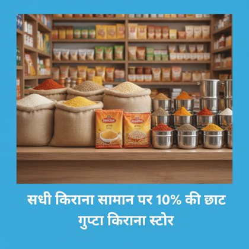 | ||
| P05 EN · Service price (tailor) Blouse Stitching Only ₹250 Laxmi Tailors | 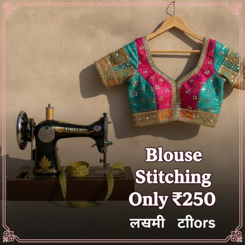 | ||
| P06 HI · Service price (tailor) ब्लाउज़ सिलाई सिर्फ़ ₹250 लक्ष्मी टेलर्स | |||
| P07 EN · Admissions notice (coaching) Admissions Open Classes 9 to 12: Maths and Science Call: 98765 43210 | |||
| P08 HI · Admissions notice (coaching) प्रवेश प्रारंभ कक्षा 9 से 12: गणित और विज्ञान संपर्क करें: 98765 43210 | |||
| P09 EN · Festival product (Holi) Holi Special Herbal Colours Available | |||
| P10 HI · Festival product (Holi) होली स्पेशल हर्बल रंग उपलब्ध | 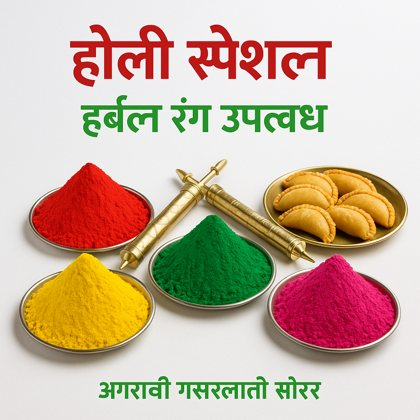 | 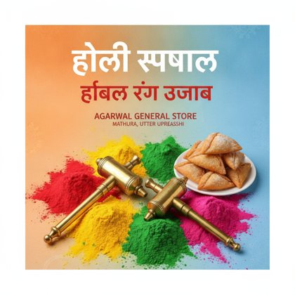 | 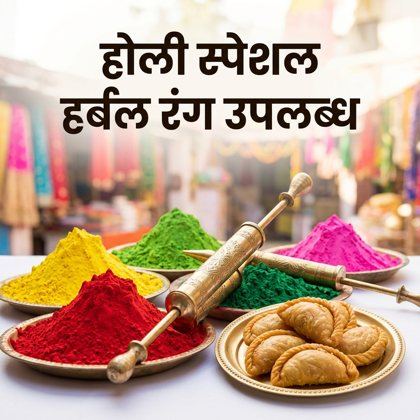 |
| P11 EN · Health camp notice (chemist) Free Sugar Test Every Sunday Shree Medical Store | |||
| P12 HI · Health camp notice (chemist) हर रविवार मुफ़्त शुगर जाँच श्री मेडिकल स्टोर | |||
| S13 MIX · Festival offer (mobile shop) Diwali Dhamaka Offer हर मोबाइल पर गिफ़्ट पक्का! | |||
| S14 HI · Subscription offer (tiffin service) माँ के हाथ जैसा खाना घर का बना शुद्ध शाकाहारी टिफ़िन मासिक प्लान सिर्फ़ ₹2500 फ़्री होम डिलीवरी | 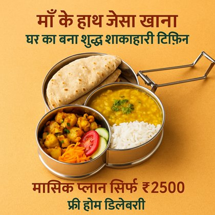 | 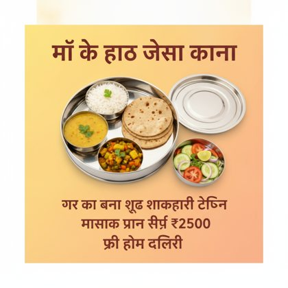 | |
| S15 HI · Festival greeting (Janmashtami) श्री कृष्ण जन्माष्टमी की हार्दिक शुभकामनाएँ | |||
| S16 HI · Regional festival greeting (Chhath Puja) छठ महापर्व की हार्दिक शुभकामनाएँ |
Thumbnails shown; full-resolution PNGs are in q1/images/ (https://github.com/AbhyudayPatel/josh-talks-hindi-poster-eval).
REAL DATA
H1. Signal validation against the crowd-consensus gold set (bad = CER > 15% vs medoid of ~126 transcriptions)
| Signal (gold set, 5,544 tasks) | Tasks flagged | Bad if flagged (95% CI) | Bad otherwise | Note |
|---|---|---|---|---|
| RTF < 1 (submitted faster than audio length) | 273 (4.9%) | 99.6% (98.0-99.9) | 26.5% | |
| RTF < 0.5 | 163 (2.9%) | 99.4% (96.6-99.9) | 28.0% | |
| Unedited when Whisper was wrong | 476 (8.6%) | 100.0% (99.2-100.0) | 23.5% | true by construction |
| Unedited (any clip) | 476 (8.6%) | 100.0% (99.2-100.0) | 23.5% | true by construction (Whisper wrong on all gold clips) |
| RTF < 1 AND unedited | 252 (4.5%) | 100.0% (98.5-100.0) | 26.7% | |
| RTF >= 1 AND unedited | 212 (3.8%) | 100.0% (98.2-100.0) | 27.3% | true by construction |
| Blank on a speech clip | 11 (0.2%) | 100.0% (74.1-100.0) | 29.9% | |
| Text density < 50% of consensus | 205 (3.7%) | 100.0% (98.2-100.0) | 27.4% |
H2. Error rate by real-time factor (gold set)
| RTF bin | Tasks | Bad rate | Median CER | Unedited share |
|---|---|---|---|---|
| <0.5 | 163 | 99% | 0.49 | 97% |
| 0.5-1 | 110 | 100% | 0.50 | 85% |
| 1-2 | 178 | 82% | 0.43 | 40% |
| 2-4 | 755 | 35% | 0.10 | 6% |
| 4-8 | 1453 | 19% | 0.06 | 1% |
| >8 | 2773 | 24% | 0.07 | 3% |
H3. Production tasks: RTF by clip length (8-digit task-ID block, real timings)
| Clip length | Tasks | Median RTF | Share RTF < 1 | Median time (s) |
|---|---|---|---|---|
| <1s | 12931 | 11.6 | 0.0% | 4.4 |
| 1-3s | 8502 | 5.2 | 4.9% | 8.9 |
| 3-6s | 7035 | 5.5 | 9.6% | 23.5 |
| 6-10s | 7861 | 4.2 | 16.8% | 34.0 |
| 10-20s | 12356 | 4.0 | 22.1% | 47.3 |
H4. Per-user scorecard (10 users with history; timing-based fields omitted - synthetic)
| User | Tasks | Audio min | Unedited (CI) | Unedited ≥5 s | Median edit WER | Blank rate | Halluc. accepted/seen | Junk | [blank]+text | Dup. long texts |
|---|---|---|---|---|---|---|---|---|---|---|
| 632098 | 165 | 14 | 78% (68-85) | 84% | 0.27 | 2% | 0/0 | 1 | 11 | 0 |
| 688393 | 86 | 7 | 36% (24-51) | 48% | 0.37 | 21% | 0/2 | 0 | 6 | 0 |
| 580062 | 609 | 48 | 27% (22-32) | 18% | 0.25 | 17% | 4/12 | 21 | 0 | 3 |
| 410566 | 349 | 28 | 21% (16-27) | 17% | 0.17 | 10% | 2/5 | 0 | 15 | 0 |
| 467270 | 176 | 14 | 14% (9-23) | 11% | 0.29 | 1% | 0/4 | 0 | 0 | 1 |
| 393886 | 509 | 36 | 13% (10-18) | 7% | 0.17 | 3% | 1/8 | 40 | 56 | 0 |
| 222099 | 333 | 27 | 7% (4-12) | 3% | 0.33 | 11% | 0/1 | 5 | 0 | 1 |
| 681509 | 358 | 29 | 5% (3-9) | 2% | 0.31 | 8% | 0/4 | 1 | 1 | 0 |
| 326611 | 149 | 11 | 5% (2-13) | 0% | 0.25 | 15% | 0/0 | 0 | 0 | 0 |
| 311760 | 184 | 15 | 0% (0-4) | 0% | 0.16 | 12% | 0/2 | 0 | 0 | 0 |
H5. Whisper hallucinations (strings recurring across unrelated recordings)
| Whisper string | Tasks | Distinct recordings | Humans wrote [blank] | Accepted verbatim |
|---|---|---|---|---|
| प्रस्तुति प्रस्तुति | 398 | 338 | 62% | 17% |
| झाल | 134 | 122 | 68% | 10% |
| कर दो | 96 | 90 | 64% | 19% |
| प्रतियों को प्रतियों को प्रतियों को प्रत… | 10 | 10 | 40% | 0% |
H6. Why the 10-user timings are unusable
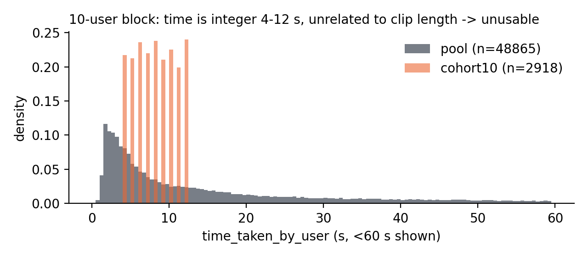
Reproducible: q1/generate.py, q1/build_rating_app.py, q1/analyze.py, q2/q2_analysis.py, tools/build_submission.py.